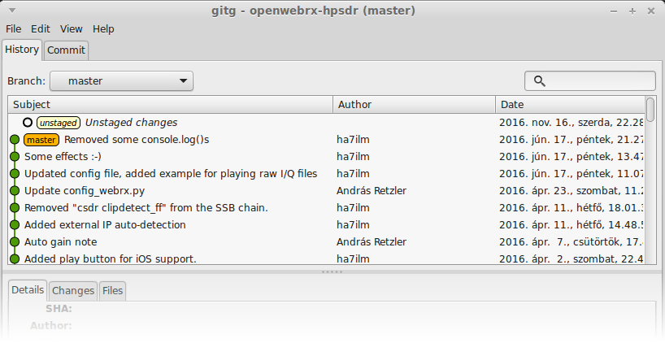
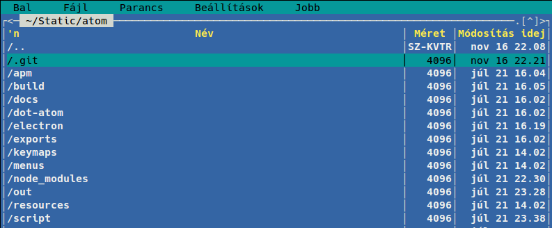

distributed version control
Linus Torvalds in 2005
What is version control?

repository
A directory under version control.

git init
Create a new git repository
git status
Show if any files changed or are untracked (not in repo).
.gitignore
Tell git to ignore some files (build products, temporary files, huge binaries, etc.)
git add
Add file to the Index (staging area)
git commit
A commit is a version of the whole project.